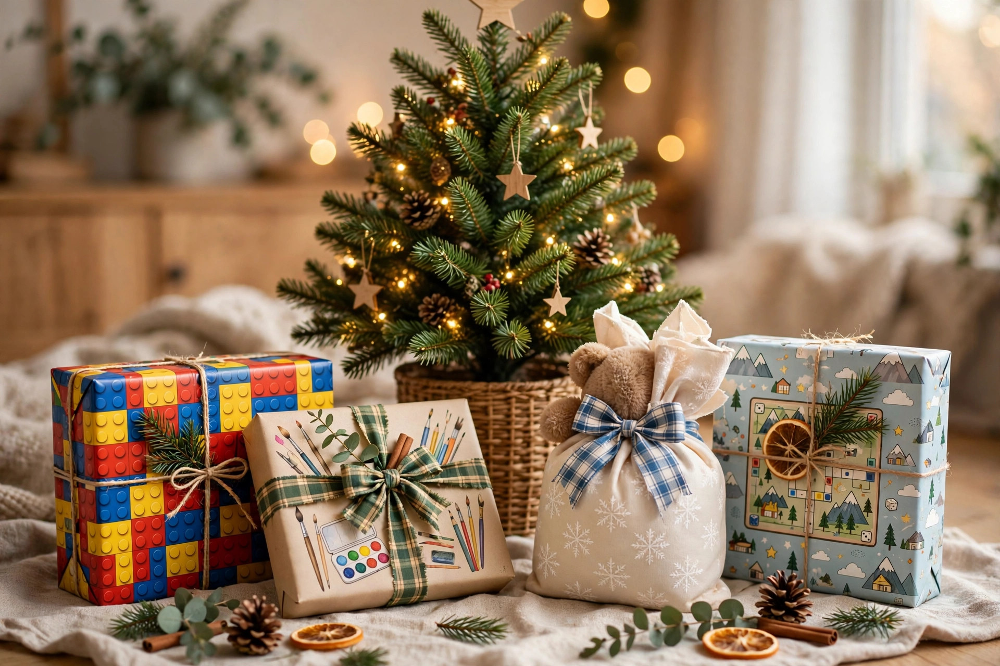

25 Christmas Gift Ideas for Kids by Age They’ll Actually Play With
27 Nov 2026 · Kashif Hameed

The best Christmas gift for a child is the one they are still playing with in February. These 25 ideas are sorted by age — toddlers to tweens — with screen-free toys, building sets and games, plus honest US prices.
Who this is for, and what it costs
This guide is for anyone buying a Christmas gift for a child — your own children, grandchildren, nieces and nephews, godchildren or a friend’s child — in the United States, the United Kingdom or Canada. The ideas are grouped by age, from 3 to 12, so you can skip straight to the right section and ignore the rest.
Cost level: low to medium. Most ideas are around $15 to $50 (roughly £12 to £40, or $20 to $65 Canadian), and every idea under $25 is marked. You can put together a lovely gift for around $25, a generous one for around $50, or combine one main gift with two or three stocking fillers. Time: about 30 minutes to choose and order, plus 15 minutes to wrap. Always check the age range on the box.
The 25 ideas
Ages 3–4: little hands, big imaginations
- A Play-Doh kitchen set (around $20–$30). Squashing, rolling and pretending to cook.
- A Melissa & Doug dollhouse (around $30–$50). Sturdy wooden furniture and tiny dolls.
- A BRIO wooden train set (around $25–$45). Click-together track, a train and a bridge.
- A sticker book (around $5–$10). Hundreds of reusable stickers and scenes to fill.
- A LeapFrog learning toy (around $15–$25). Letters, numbers and songs.
Ages 5–6: building, racing and pretending
- Stomp Racers (around $20–$30). Stomp on the pad and the car zooms across the room.
- An interactive pet (around $20–$35). A toy pet that responds and moves.
- A dance mat (around $20–$30). Lights, music and steps to follow.
- A Barbie set (around $20–$40). A doll with a house, a car or a career set.
- A Magna-Tiles starter set (around $25–$45). Magnetic tiles that click into houses, towers and castles.
Ages 7–8: making, solving and collecting
- A LEGO Gear Bots set (around $20–$35). Build a robot, then make it move.
- A CrunchLabs build kit (around $25–$40). A building kit with a real mechanism to make.
- A Rainbow Loom kit (around $15–$25). Bands, hooks and charms to make bracelets.
- Guess Who? Pokémon edition (around $20–$30). The classic guessing game, with Pokémon.
- A Crayola Goo set (around $15–$25). Squishy, stretchy art and science in one box.
Ages 9–10: bigger builds and real games
- A LEGO Star Wars set (around $30–$50). A ship or scene to build over an afternoon.
- Catan On The Road (around $25–$35). The family strategy game, in a travel version.
- A Tamagotchi (around $20–$30). The pocket pet is back — feed it and play with it.
- A soap and bath-bomb lab (around $20–$30). Make your own soaps and bath bombs.
- A Squishmallow plush (around $15–$25). Soft, squashy and collectable.
Ages 11–12: tweens who want something cool
- Flipslide (around $25–$35). A fast, handheld sliding-tile game.
- A mini record player (around $30–$50). A small turntable with a record or two.
- A NASA telescope (around $30–$50). A beginner telescope for the moon and stars.
- A soccer trainer (around $20–$30). A rebounder or skills ball for the garden.
- Stocking fillers under $25 (around $5–$15 each). A Spot It! card game, paint sticks, or an art case.
Supply and shopping list
You do not need to buy everything below — this is a checklist for one gift, plus wrapping. Typical US prices are shown; prices vary by shop and season.
- The gift itself: around $15–$50, as listed above
- Wrapping paper or a gift bag: around $3–$6
- Ribbon or twine: around $2–$4
- A gift tag and a card: around $2–$5
- Tissue paper: around $2–$3
- Optional: batteries, if the toy needs them — check the box first: around $5–$8
- Optional: a small stocking filler to go with the main gift: around $5–$15
How to choose the right gift, step by step
- Start with the age, not the toy. Find the child’s age group above first — a gift that is too easy bores them, and one that is too hard frustrates them.
- Watch what they already play with. A child who builds will love LEGO or Magna-Tiles; a child who draws will love an art case; a child who runs will love a dance mat.
- Check the age range on the box. It is a safety guide, especially for small parts, and it also tells you whether the toy will hold their interest.
- Pick one main gift, not five small ones. One good gift beats a pile they forget by New Year.
- Buy it early. Popular toys sell out in December. Order at least two weeks before Christmas in the US, UK or Canada.
- Wrap it so they can open it themselves. Easy-tear paper, no impossible tape, and batteries already in the toy if it needs them — so they can play straight away.
Tips that save time and money
- Ask the parents first — they know what the child already has, what is on their list, and what is banned from the house.
- Buy the stocking fillers in a set of three or four. It costs less per gift and the stocking feels full.
- Shop the sales after Christmas for next year, and keep one or two unopened toys in a cupboard for unexpected birthdays.
- If you are buying online, read the size carefully — a “starter set” can be much smaller than the picture suggests.
Common mistakes to avoid
- Buying for the age they were, not the age they are. A 7-year-old has outgrown the toddler toys, even if they loved them last year.
- Ignoring the small-parts warning. Check the age range, especially if there are younger children in the house.
- Buying a gift that needs a phone or tablet. If it only works with an app, check the parents are happy with that first.
- Forgetting the batteries. A toy that cannot be played with on Christmas morning is a very sad gift. Check the box and buy batteries with it.
Variations for different budgets, ages and occasions
Under $25: choose one small idea — a sticker book, paint sticks, a card game, a Squishmallow or a loom kit — and wrap it beautifully. It will feel complete, not cheap.
Around $50: pair a main gift with a stocking filler, such as a LEGO set and a Spot It! game, or a dance mat and an art case.
For a birthday instead of Christmas: the same age groups work all year — just swap the Christmas wrapping for birthday paper, and add a card with a joke they will actually laugh at.
Frequently asked questions
How many Christmas gifts should a child get? Three or four good gifts beat ten small ones: one main gift, one book or creative gift, one game to play together, and one stocking filler. Children remember the gifts they play with, not the number of parcels.
What is a good Christmas gift for a 5 year old? At five, children love building, racing and pretending: a LEGO set, Stomp Racers, an interactive pet, a dance mat or a doll set. Pick one that matches what they already play with, and check the age range on the box.
How much should I spend on Christmas gifts for kids? Around $25 to $50 per child is a thoughtful range for most families, with one main gift at the top of that range and smaller stocking fillers under $25. The right amount is the one you can afford comfortably.
Related posts
- 25 Christmas Gift Ideas for Him He’ll Actually Use
- 30 Birthday Party Ideas for Kids That Are Easy, Fun and Budget-Friendly
- 25 Thoughtful Gift Ideas for Her She’ll Actually Love
- 20 Easy Christmas Party Food and Drink Ideas Guests Will Love
- 20 DIY Party Favours Guests Will Actually Keep
Last updated: 27 Nov 2026